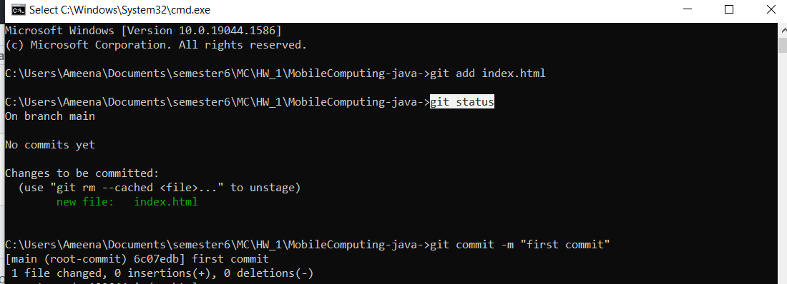
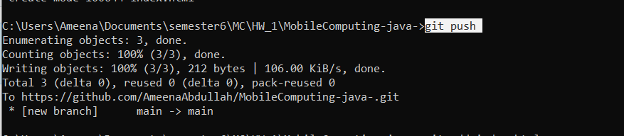

Git and GitHub Tutorial for Beginners
STEP:1 Install git and create a GitHub account
Git. You can use online hosts (such as GitHub) to store a copy of the files and their revision history. Having a centrally located place where you can upload your changes and download changes from others, enable you to collaborate more easily with other developers. Git can automatically merge the changes, so two people can even work on different parts of the same file and later merge those changes without losing each other’s work!
STEP:2 Create a local git repository
Open a terminal(cmd) within a folder where you want to place the project on your local machine
To initialize a git repository in the root of the folder, run the git init command:
.png)
STEP:3 Add new file in repository
Create any type of file in git repo folder (eg index.html). Once you have added files in a folder containing a git repo, git will notice that the file exists inside the repo. But, git would not track the file unless you explicitly tell it .
To add a file to a commit, you first need to add it to the staging environment. To do this, you can use the git add
run the git add < filename > command:
If you run the git status command, you'll see that git has added the file to the staging environment (notice the "Changes to be committed" line)..
STEP:4 Create a commit
Now Go ahead and create first commit.
Run the git commit -m "message about commit" command.

At the end of the commit ,the message should be something related to what the commit contains -
STEP:5 Push to GitHub
After commit , push changes to GitHub .This allows others people to see changes you have made.
To push changes on Gihub , git push command is used
